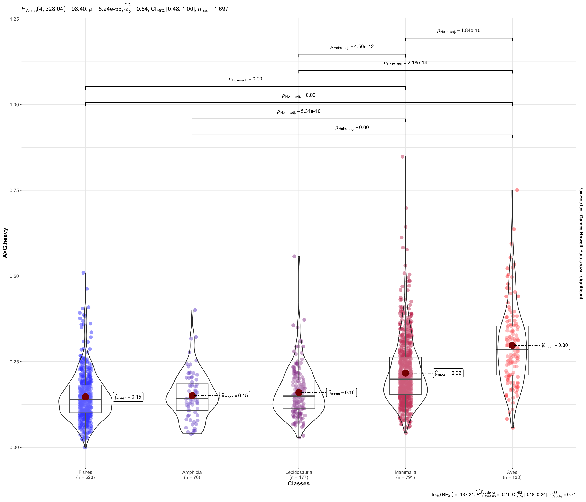

Analysis of the mitochondrial mutational spectra between different classes
Alina G. Mikhailova
2025-06-02
Last updated: 2025-06-02
Checks: 7 0
Knit directory:
TemperatureEffectsOnMtDNAspectra/
This reproducible R Markdown analysis was created with workflowr (version 1.7.1). The Checks tab describes the reproducibility checks that were applied when the results were created. The Past versions tab lists the development history.
Great! Since the R Markdown file has been committed to the Git repository, you know the exact version of the code that produced these results.
Great job! The global environment was empty. Objects defined in the global environment can affect the analysis in your R Markdown file in unknown ways. For reproduciblity it’s best to always run the code in an empty environment.
The command set.seed(20240719) was run prior to running
the code in the R Markdown file. Setting a seed ensures that any results
that rely on randomness, e.g. subsampling or permutations, are
reproducible.
Great job! Recording the operating system, R version, and package versions is critical for reproducibility.
Nice! There were no cached chunks for this analysis, so you can be confident that you successfully produced the results during this run.
Great job! Using relative paths to the files within your workflowr project makes it easier to run your code on other machines.
Great! You are using Git for version control. Tracking code development and connecting the code version to the results is critical for reproducibility.
The results in this page were generated with repository version 530b2a6. See the Past versions tab to see a history of the changes made to the R Markdown and HTML files.
Note that you need to be careful to ensure that all relevant files for
the analysis have been committed to Git prior to generating the results
(you can use wflow_publish or
wflow_git_commit). workflowr only checks the R Markdown
file, but you know if there are other scripts or data files that it
depends on. Below is the status of the Git repository when the results
were generated:
Ignored files:
Ignored: .DS_Store
Ignored: .Rhistory
Ignored: .Rproj.user/
Ignored: analysis/.DS_Store
Ignored: analysis/.RData
Ignored: analysis/.Rhistory
Ignored: code/.DS_Store
Ignored: data/.DS_Store
Ignored: data/AllGenesCodonUsageNoOverlap.txt
Ignored: data/ColdAndWarmFishesSpectra.txt
Ignored: data/Dataset_S1.csv
Ignored: data/ExpectedFractions.txt
Ignored: data/Extra_climate_data_2025.csv
Ignored: data/Extra_temperature_grow_data_2025.csv
Ignored: data/Extra_temperature_popQB_data_2025.csv
Ignored: data/Full_fish_ecology_table_2025.csv
Ignored: data/MIDORI2_LONGEST_NUC_GB265_Cytb_BLAST.fasta
Ignored: data/MIDORI2_LONGEST_NUC_GB265_Cytb_BLAST.fasta.fai
Ignored: data/MIDORI_WG_CYTB_FISHES.csv
Ignored: data/SimulationData.csv
Ignored: output/.DS_Store
Ignored: output/tables/
Note that any generated files, e.g. HTML, png, CSS, etc., are not included in this status report because it is ok for generated content to have uncommitted changes.
These are the previous versions of the repository in which changes were
made to the R Markdown
(analysis/III_Comparison_of_all_Classes.Rmd) and HTML
(docs/III_Comparison_of_all_Classes.html) files. If you’ve
configured a remote Git repository (see ?wflow_git_remote),
click on the hyperlinks in the table below to view the files as they
were in that past version.
| File | Version | Author | Date | Message |
|---|---|---|---|---|
| Rmd | 530b2a6 | Alya Mikhailova | 2025-06-02 | fix chunk name after failed render |
| html | 530b2a6 | Alya Mikhailova | 2025-06-02 | fix chunk name after failed render |
| Rmd | ad28257 | Alya Mikhailova | 2025-06-02 | Violin plots for tempersture and A>G |
Reading mutation spectra database (L-strand) and ecological databases
mutSpec12all <- read_csv(here(data_dir, "MutSpecVertebrates12all.csv.gz"))
mutSpec12allCb <- dplyr::filter(mutSpec12all, Gene == "Cytb")
MutSpecForAnalysisCbAll <- mutSpec12allCb %>% dplyr::select(Class, Species, Mut, MutSpec)
MutSpecForAnalysisCbAll$Mut <- gsub(">", "_", MutSpecForAnalysisCbAll$Mut)
MutSpecForAnalysisCbAll <- MutSpecForAnalysisCbAll %>% pivot_wider(names_from = Mut, values_from = MutSpec, , values_fn = median)
colnames(MutSpecForAnalysisCbAll) <- c("Class",
"Species",
"T_G.H",
"T_C.H",
"T_A.H",
"G_T.H",
"G_C.H",
"G_A.H",
"C_T.H",
"C_G.H",
"C_A.H",
"A_T.H",
"A_G.H",
"A_C.H")fishEcology <- read.csv(here(data_dir, "Full_fish_ecology_table_2025.csv"))
head(fishEcology) Species Wmax Lmax tmax
1 Abbottina_rivularis NA 9.10000 2.00000
2 Abramis_brama 4112.167 46.91111 14.41667
3 Abudefduf_vaigiensis NA 18.96667 NA
4 Acanthemblemaria_aspera NA 3.00000 4.00000
5 Acanthocybium_solandri 7200.000 177.88000 9.30000
6 Acanthopagrus_berda 660.000 56.00000 12.50000
FeedingType FoodTroph tm Lm Temp_min Temp_max
1 <NA> NA 1.000 4.50000 NA NA
2 hunting macrofauna (predator) 3.15 4.125 28.75000 10 24
3 grazing on aquatic plants 3.39 NA 12.00000 NA NA
4 hunting macrofauna (predator) 3.12 NA NA NA NA
5 hunting macrofauna (predator) 4.45 2.000 99.33333 NA NA
6 hunting macrofauna (predator) 3.50 NA 21.00000 NA NA
Climate_zone Temp_avg
1 subtropical NA
2 temperate 17
3 tropical NA
4 <NA> NA
5 subtropical NA
6 tropical NAfishEcologyTemp <- fishEcology %>% dplyr::select(Species, Temp_avg)
fishEcologyTemp <- na.omit(fishEcologyTemp)
fishEcologyTemp$Class <- "Fishes"
allEcology <-read.csv(here(data_dir, "Dataset_S1.csv"), sep=";")
allEcology$Temp_avg <- as.numeric(gsub(",", ".", allEcology$Tb))
allEcology$Tb <- NULL
allEcology <- rbind(allEcology, fishEcologyTemp)
todelete <- c(
"Testudines",
"Crocodylia")
allEcology <- allEcology[!allEcology$Class %in% todelete,]
allEcology <- allEcology %>% mutate(
Class = fct_relevel(
Class,
"Fishes",
"Amphibia",
"Lepidosauria",
"Mammalia",
"Aves"
)
)
allEcologyNOCLASS <- allEcology
allEcologyNOCLASS$Class <- NULLComparison temperatures of all Classes
plt <- ggbetweenstats(data = allEcology, x = Class, y = Temp_avg) +
labs(x = "Classes", y = "Temp_avg") +
scale_color_manual(values = c(
"#6760db",
"#7849bf",
"#9145c4",
"#c73a69",
"#c2464c"))
plt
| Version | Author | Date |
|---|---|---|
| 530b2a6 | Alya Mikhailova | 2025-06-02 |
Comparison A>G of all Classes
merging <- list(MutSpecForAnalysisCbAll, allEcologyNOCLASS)
MutSpecForAnalysisCbAll <- merging %>% purrr::reduce(left_join, by= "Species")
MutSpecForAnalysisCbAll[MutSpecForAnalysisCbAll$Class == "Actinopteri",]$Class <- "Fishes"
MutSpecForAnalysisCbAll <- MutSpecForAnalysisCbAll %>% mutate(Class = fct_relevel(
Class,
"Fishes",
"Amphibia",
"Lepidosauria",
"Mammalia",
"Aves"
))
str(MutSpecForAnalysisCbAll$Class) Factor w/ 5 levels "Fishes","Amphibia",..: 4 3 4 1 4 4 4 4 3 4 ...plt2 <- ggbetweenstats(data = MutSpecForAnalysisCbAll, x = Class, y = A_G.H) +
labs(x = "Classes", y = "A>G.heavy") +
scale_color_manual(values = c(
"#6760db",
"#7849bf",
"#9145c4",
"#c73a69",
"red"))
plt2
sessionInfo()R version 4.5.0 (2025-04-11)
Platform: aarch64-apple-darwin20
Running under: macOS Sequoia 15.5
Matrix products: default
BLAS: /Library/Frameworks/R.framework/Versions/4.5-arm64/Resources/lib/libRblas.0.dylib
LAPACK: /Library/Frameworks/R.framework/Versions/4.5-arm64/Resources/lib/libRlapack.dylib; LAPACK version 3.12.1
locale:
[1] en_US.UTF-8/en_US.UTF-8/en_US.UTF-8/C/en_US.UTF-8/en_US.UTF-8
time zone: Europe/Vienna
tzcode source: internal
attached base packages:
[1] stats graphics grDevices utils datasets methods base
other attached packages:
[1] skimr_2.1.5 ggstatsplot_0.13.1 broom_1.0.8 ggpubr_0.6.0
[5] ggExtra_0.10.1 geiger_2.0.11 phytools_2.4-4 maps_3.4.3
[9] caper_1.0.3 mvtnorm_1.3-3 MASS_7.3-65 ape_5.8-1
[13] magrittr_2.0.3 lubridate_1.9.4 forcats_1.0.0 stringr_1.5.1
[17] dplyr_1.1.4 purrr_1.0.4 readr_2.1.5 tidyr_1.3.1
[21] tibble_3.2.1 ggplot2_3.5.2 tidyverse_2.0.0 knitr_1.50
[25] here_1.0.1 workflowr_1.7.1
loaded via a namespace (and not attached):
[1] RColorBrewer_1.1-3 rstudioapi_0.17.1 jsonlite_2.0.0
[4] datawizard_1.1.0 correlation_0.8.7 subplex_1.9
[7] SuppDists_1.1-9.9 estimability_1.5.1 farver_2.1.2
[10] rmarkdown_2.29 fs_1.6.6 vctrs_0.6.5
[13] memoise_2.0.1 paletteer_1.6.0 base64enc_0.1-3
[16] effectsize_1.0.1 rstatix_0.7.2 htmltools_0.5.8.1
[19] DEoptim_2.2-8 deSolve_1.40 BWStest_0.2.3
[22] Formula_1.2-5 sass_0.4.10 bslib_0.9.0
[25] emmeans_1.11.1 cachem_1.1.0 whisker_0.4.1
[28] igraph_2.1.4 mime_0.13 lifecycle_1.0.4
[31] iterators_1.0.14 pkgconfig_2.0.3 Matrix_1.7-3
[34] R6_2.6.1 fastmap_1.2.0 PMCMRplus_1.9.12
[37] shiny_1.10.0 BayesFactor_0.9.12-4.7 digest_0.6.37
[40] numDeriv_2016.8-1.1 rematch2_2.1.2 patchwork_1.3.0
[43] ps_1.9.1 rprojroot_2.0.4 labeling_0.4.3
[46] clusterGeneration_1.3.8 timechange_0.3.0 httr_1.4.7
[49] abind_1.4-8 compiler_4.5.0 bit64_4.6.0-1
[52] withr_3.0.2 doParallel_1.0.17 backports_1.5.0
[55] optimParallel_1.0-2 carData_3.0-5 performance_0.14.0
[58] ggsignif_0.6.4 scatterplot3d_0.3-44 tools_4.5.0
[61] httpuv_1.6.16 statsExpressions_1.7.0 glue_1.8.0
[64] quadprog_1.5-8 callr_3.7.6 nlme_3.1-168
[67] promises_1.3.2 grid_4.5.0 getPass_0.2-4
[70] generics_0.1.4 gtable_0.3.6 tzdb_0.5.0
[73] hms_1.1.3 car_3.1-3 ggrepel_0.9.6
[76] foreach_1.5.2 pillar_1.10.2 vroom_1.6.5
[79] later_1.4.2 lattice_0.22-7 gmp_0.7-5
[82] bit_4.6.0 tidyselect_1.2.1 miniUI_0.1.2
[85] pbapply_1.7-2 git2r_0.36.2 xfun_0.52
[88] expm_1.0-0 stringi_1.8.7 boot_1.3-31
[91] yaml_2.3.10 kSamples_1.2-10 evaluate_1.0.3
[94] codetools_0.2-20 multcompView_0.1-10 cli_3.6.5
[97] RcppParallel_5.1.10 xtable_1.8-4 parameters_0.26.0
[100] repr_1.1.7 processx_3.8.6 jquerylib_0.1.4
[103] Rcpp_1.0.14 zeallot_0.2.0 coda_0.19-4.1
[106] parallel_4.5.0 rstantools_2.4.0 MatrixModels_0.5-4
[109] bayestestR_0.16.0 Rmpfr_1.1-0 phangorn_2.12.1
[112] scales_1.4.0 insight_1.3.0 crayon_1.5.3
[115] combinat_0.0-8 rlang_1.1.6 fastmatch_1.1-6
[118] mnormt_2.1.1